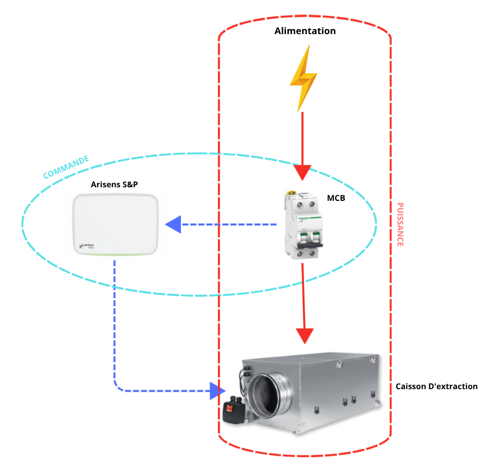

Cette solution utilise un détecteur de CO₂ (AIRSENS) pour ajuster automatiquement la vitesse du ventilateur via un signal 0‑10 V, en fonction de la qualité de l’air mesurée. Elle permet ainsi une ventilation modulée, plus efficace et plus économe, en augmentant le débit uniquement lorsque le niveau de CO₂ l’exige.

| MSF Code | Description (FR) | Commentaire |
|---|---|---|
| PELEMCBS2B03M | Disjoncteur B3 6kA, 2P | Protection principale du circuit contre surcharge et court-circuit. |
| CCLIVENTSPFA | Caisson de Ventilation ECOWATT UVF-600/200 F7, 230V, 40/60Hz | Ventilateur piloté en mode 0-10V. |
| - | Boîtier de contrôle AIRSENS Version CO₂ | Capteur de qualité d'air pilotant le signal 0-10V. |